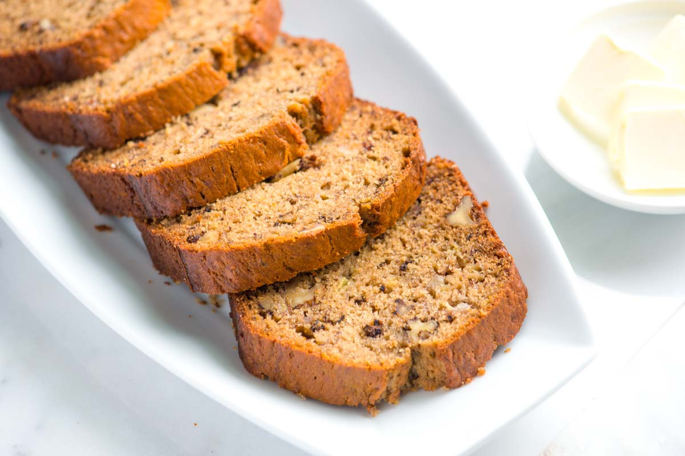

<ion-header>
  <ion-navbar>
    <button ion-button menuToggle>
      <ion-icon name="menu"></ion-icon>
    </button>
    <ion-title>Meals</ion-title>
  </ion-navbar>
</ion-header>


<ion-content class="card-background-page">
    <ion-searchbar (ionInput)="getFood($event)"></ion-searchbar>
    <ion-list>
      <ion-item *ngFor="let food of foods">
        {{ food }}
      </ion-item>
    </ion-list>    
    

  <ion-card>
    
    <div class="card-title">Banana Bread</div>
    <div class="card-subtitle">Needs 8 ingredients</div>
  </ion-card>

  <ion-card>
    
    <div class="card-title">Burger</div>
    <div class="card-subtitle">Needs 4 ingredients</div>
  </ion-card>

  <ion-card>
    
    <div class="card-title">Chicken And Broccoli</div>
    <div class="card-subtitle">Needs 2 ingredients</div>
  </ion-card>

  <ion-card>
    
    <div class="card-title">Pancakes</div>
    <div class="card-subtitle">Needs 1 ingredient</div>
  </ion-card>


</ion-content>
